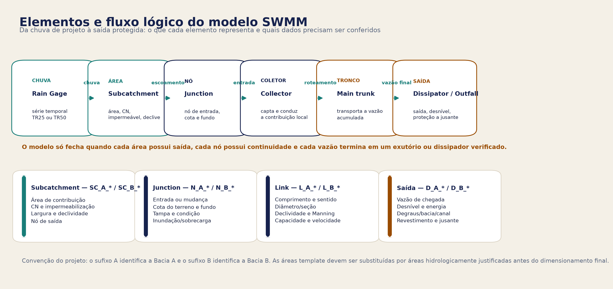
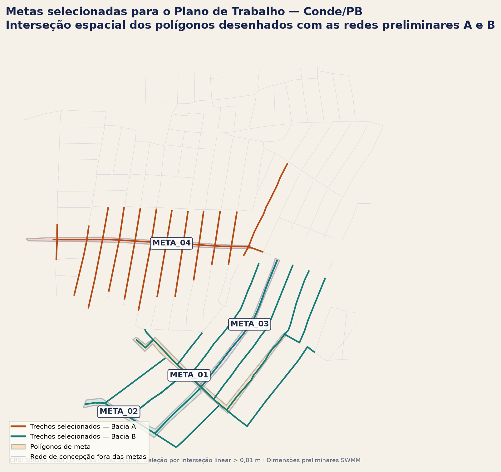

4. Modelagem hidráulica
4.1 Rede de partida da Bacia A
A rede foi reunida a partir dos arquivos TroncoA.shp, ColetorA.shp e ColetarA6.shp. As linhas foram recortadas na Bacia A, divididas em interseções, conectadas por snap de até 2 m e transformadas em links nodais.
4.2 Elementos do modelo
| Elemento | Representação preliminar | Revisão necessária |
|---|---|---|
| Tronco principal | link com maior função de transporte | continuidade, seção, material e capacidade |
| Coletor | link de captação e conexão | nó de entrada, áreas e sentido |
| Nó | cruzamento, entrada ou mudança de seção | cota de terreno, fundo, tampa e condição |
| Dissipador | trecho entre início e fim marcado em shapefile | vazão, desnível, comprimento e proteção |
| Exutório | saída da rede ou fronteira hidráulica | cota, condição de jusante e destino |
| Área de contribuição | subcatchment SWMM | geometria real, perdas e nó de lançamento |

O diagrama deve ser lido junto com a tabela: a geometria desenhada no GIS define a autoridade espacial, enquanto o arquivo de entrada do SWMM registra os parâmetros hidráulicos e hidrológicos. Uma linha sem nó de entrada ou sem saída verificável não deve ser tratada como trecho dimensionado.
Metodologia de construção e verificação do modelo
A montagem do modelo segue uma sequência integrada entre GIS e SWMM. Primeiro, os eixos dos troncos principais, coletores e trechos de dissipação são conferidos sobre o MDT híbrido recortado para as Bacias A e B, a imagem de apoio e as linhas de fluxo superficial. Essa etapa permite corrigir o sentido de escoamento, identificar cruzamentos, eliminar sobreposições e preservar a distinção entre os componentes das duas bacias. A convenção de identificação utiliza os prefixos A e B para os objetos pertencentes, respectivamente, às Bacias A e B.
Em seguida, as linhas são transformadas em uma rede nodal. Cada mudança de direção, encontro de trechos, entrada de contribuição, mudança de seção ou saída recebe um nó; cada segmento entre dois nós é convertido em um link do SWMM. Para cada nó devem ser verificadas a cota do terreno, a cota de fundo, a profundidade disponível e a condição de jusante. Para cada link devem ser conferidos o comprimento, o sentido, a seção, o material, a rugosidade e a capacidade hidráulica. O comprimento e a conectividade são obtidos prioritariamente da geometria revisada no GIS; os demais parâmetros devem ser substituídos pelos dados de projeto ou de vistoria quando estiverem disponíveis.
As áreas de contribuição são organizadas como subáreas do SWMM. A delimitação preliminar é orientada pelo MDT híbrido, pelas curvas de nível, pelas linhas de fluxo, pelo traçado viário, pelas quadras e pelos pontos de captação. Cada subárea deve ser associada a um único nó de lançamento, receber área, largura hidráulica, declividade, percentual impermeável e parâmetros de infiltração compatíveis com a ocupação local. As áreas Voronoi utilizadas na primeira rodada são apenas um suporte de organização e não substituem a delimitação hidrologicamente justificada das quadras e ruas.
Os trechos marcados em TrechosDissipacao.shp são incorporados como saídas controladas da rede. O ponto de maior cota é tratado como entrada e o de menor cota como saída, após conferência do sentido no MDT. A representação preliminar no SWMM utiliza um link específico para preservar o balanço de vazão e permitir a leitura da descarga de chegada; a solução física — canal, escada hidráulica, bacia de dissipação, revestimento ou combinação — somente será definida após a verificação do desnível, da vazão, da velocidade e das condições de erosão e estabilidade a jusante. Portanto, a existência de um dissipador no arquivo não significa que seu dimensionamento estrutural esteja concluído.
Depois da preparação geométrica, são executadas rodadas hidrológicas e hidráulicas para as chuvas de projeto. Nesta concepção preliminar, os coletores e bueiros são avaliados com TR25 e os troncos principais e dissipadores com TR50, inicialmente com a premissa hidrológica tradicional adotada no estudo. Na etapa de adaptação climática, as mesmas estruturas serão reavaliadas com as chuvas atualizadas por cenário, incluindo faixas de incerteza. Para cada rodada devem ser registrados, no mínimo, vazão de pico, nível d’água, lâmina ou carga hidráulica, velocidade, relação de enchimento, ocorrência de sobrecarga, extravasamento e continuidade do balanço de massa.
A verificação final combina quatro testes: (i) conectividade topológica, garantindo que cada área tenha saída e que cada trecho tenha nós de entrada e saída; (ii) consistência altimétrica, conferindo se as cotas e declividades são compatíveis com o MDT e com o sentido natural do terreno; (iii) desempenho hidráulico, identificando trechos insuficientes, sobrecarregados ou com velocidades críticas; e (iv) rastreabilidade, vinculando cada resultado do SWMM ao trecho correspondente no GIS. Somente os segmentos que passarem por esses testes poderão ser selecionados posteriormente como metas do Plano de Trabalho de Reconstrução. Os demais permanecerão como alternativas preliminares ou serão encaminhados para revisão específica.
4.3 Arquivos SWMM preliminares
- CONDE_BACIA_A_REDE_PRELIM_TR25.inp — chuva tradicional TR25;
- CONDE_BACIA_A_REDE_PRELIM_TR50.inp — chuva tradicional TR50.
- CONDE_BACIA_B_REDE_DISSIPADORES_PRELIM_TR25.inp — chuva tradicional TR25;
- CONDE_BACIA_B_REDE_DISSIPADORES_PRELIM_TR50.inp — chuva tradicional TR50.
Os arquivos contêm as estruturas iniciais das duas bacias. Diâmetros, rugosidades, cotas de fundo, condições de jusante e áreas de quadras ainda precisam ser substituídos por dados revisados.
4.4 Áreas de contribuição
O passo seguinte é editar no GIS as áreas de quadras e ruas, quebrá-las quando houver mudança de sentido, associá-las aos nós corretos e registrar a origem de cada contribuição. O desenho deve combinar:
- MDT híbrido e linhas de fluxo;
- meio-fio, sarjeta, pavimentação e declividade das ruas;
- quadras, lotes e pontos de captação;
- travessias e obstáculos;
- limite das Bacias A e B;
- conexão à rede subterrânea.
O template Voronoi não deve ser interpretado como resultado final de delimitação.
4.5 Dissipadores e saídas
A camada TrechosDissipacao.shp marca o início e o fim de trechos de dissipação e saída da rede. A regra de concepção é que toda água captada pelo sistema deve ser conduzida a uma saída verificada, preferencialmente por um desses trechos.
A integração no SWMM será feita após:
- conferir o sentido da linha e o nó de início/fim;
- amostrar cotas no MDT e nas curvas integradas;
- calcular desnível e declividade;
- obter vazões de chegada dos cenários hidrológicos;
- selecionar representação conceitual — canal, degraus, bacia, saída ou combinação;
- verificar erosão e estabilidade a jusante.
A solução de dissipação será descrita como concepção, não como dimensionamento estrutural definitivo, até que haja topografia e geotecnia de detalhe.
4.6 Rodada reproduzida e pré-dimensionamento preliminar — Bacia B
O lançamento recebido para a Bacia B foi organizado com três arquivos de tronco (TroncoB1.shp, TroncoB2.shp e TroncoB3.shp), dois arquivos de coletor (ColetorB1.shp e ColetorB2.shp) e o arquivo específico Trechos_Dissipacao_B.shp. As 23 feições de origem foram recortadas no limite da Bacia B, divididas nas interseções, conectadas por snap de até 2 m e orientadas pelo declive do MDT híbrido.
O resultado produziu 44 links nodais de rede, 47 nós, 46 áreas de contribuição Voronoi preliminares e dois links de dissipação com prefixo D_B_. Após a integração necessária para o SWMM, o arquivo contém 47 conduítes, dos quais 46 são físicos e um (L_B_C0030) é conector topológico provisório. A rede física tem aproximadamente 8,74 km, sendo cerca de 8,64 km de troncos/coletores e 0,10 km de linhas de dissipação. Foram identificados dois componentes conectados; portanto, a Bacia B ainda não deve ser tratada como um sistema único contínuo.
Os arquivos seguem a convenção de identificação N_B_, L_B_, SC_B_ e D_B_. O CN médio agregado utilizado como premissa foi 76,77, correspondente ao recorte CN 2022 da Bacia B; a impermeabilização preliminar foi mantida em 30%, apenas para a primeira rodada. As áreas Voronoi não representam ainda as quadras hidrológicas finais.
Os dois dissipadores foram orientados pelo MDT: o ponto de maior cota foi tratado como entrada e o de menor cota como saída. Cada trecho foi representado no SWMM por um conduto circular placeholder de 1,20 m até um outfall O_B_DISS_*. Essa representação permite obter vazões de chegada, mas não dimensiona escada hidráulica, degraus, bacia de dissipação, revestimento ou proteção geotécnica.
4.7 Bacia B e simulação conjunta
Os modelos das Bacias A e B são mantidos separados durante a montagem para evitar conectar unidades sem comprovação hidráulica. Uma verificação conjunta só será feita onde a conexão entre bacias, exutórios ou sistemas for demonstrada.
4.8 Rede proposta para as duas bacias e recorte do Plano de Trabalho
O relatório distingue claramente rede de concepção de trechos convertidos em metas espaciais preliminares. A rede de concepção cobre as duas unidades de drenagem; a seleção para o Plano de Trabalho combina agora os polígonos desenhados pelo usuário com a criticidade preliminar, a continuidade hidráulica, a população/infraestrutura protegida, o risco de erosão a jusante e a viabilidade de execução.
| Unidade | Concepção de rede | Trechos candidatos às metas | Fechamento esperado |
|---|---|---|---|
| Bacia A | Rede preliminar já lançada, com troncos, coletores, nós, áreas template e dissipadores/saídas em revisão | META_04: 45 trechos, 5.193,12 m de extensão integral dos segmentos e 1 dissipador intersectado |
Revisar áreas, continuidade, dissipador, cotas, seções e cenários TR25/TR50 |
| Bacia B | Rede preliminar com troncos, coletores, nós, áreas template, 2 dissipadores e 2 componentes conectados | META_01–META_03: 29 trechos, 7.299,20 m de extensão integral dos segmentos e 2 dissipadores intersectados |
Revisar áreas, ligações, seções, cotas, dissipadores e condição de jusante |
| Bacias A + B | Concepção integrada, sem conectar automaticamente uma bacia à outra | 4 polígonos de meta, 74 trechos selecionados, 38 nós e 3 dissipadores | Integração somente onde houver comprovação topográfica e hidráulica |

Assim, o relatório apresenta a rede preliminar proposta para as duas bacias e o recorte espacial indicado para o Plano de Trabalho, sem afirmar que os 74 trechos selecionados serão executados automaticamente. Os nomes dos links, pontos de início/fim, extensões e parâmetros de triagem estão organizados na tabela detalhada das metas. Diâmetros finais, vazões de projeto, quantitativos executivos e soluções de dissipação continuam condicionados à validação.
4.9 Critérios de verificação hidráulica
Cada rodada deverá reportar:
- continuidade da rede e componentes desconectados;
- balanço de massa;
- nós com alagamento ou sobrecarga;
- links com capacidade insuficiente;
- velocidades e condições de escoamento;
- vazões de chegada aos dissipadores;
- condições de jusante;
- sensibilidade a TR25, TR50 e cenários climáticos;
- arquivos de entrada, versão do modelo e parâmetros usados.
4.10 Próxima rodada
A sequência operacional agora é: revisar no ArcMap os 4 polígonos de meta e os 74 trechos selecionados, substituir as áreas template por áreas de contribuição reais, atualizar cotas e seções, confirmar os dissipadores, reexecutar a linha de base, revisar os resultados por meta e fechar o recorte executivo do Plano de Trabalho.
4.11 Primeira rodada integrada — Bacia A
Foi executada uma primeira rodada exploratória com os modelos integrados CONDE_BACIA_A_REDE_DISSIPADORES_TR25.inp e CONDE_BACIA_A_REDE_DISSIPADORES_TR50.inp, usando o EPA SWMM 5.2.4. Os arquivos originais CONDE_BACIA_A_REDE_PRELIM_TR25/50.inp foram preservados. A integração adicionou conectores topológicos provisórios nos seis outfalls que tinham múltiplas entradas, condição que o SWMM não aceita diretamente.
| Cenário | Erro de continuidade do escoamento | Erro de continuidade do roteamento | Nós com inundação | Links acima da capacidade cheia atual | Perda por inundação |
|---|---|---|---|---|---|
| TR25 | -0,018% | -0,004% | 28 | 34 | 0,664 milhões de litros |
| TR50 | -0,018% | -0,005% | 35 | 37 | 1,396 milhões de litros |
As maiores vazões preliminares nos trechos de dissipação foram: DISS_01 = 5,34/5,43 m³/s; DISS_02 = 0,87/1,00 m³/s; DISS_03 = 7,31/7,67 m³/s; DISS_04 = 4,94/5,19 m³/s; e DISS_05 = 5,06/5,58 m³/s, respectivamente para TR25/TR50. DISS_03 concentra a maior vazão entre as saídas cadastradas. DISS_04 continua com alerta de revisão do snap entre a linha do dissipador e a rede.
Na configuração atual, destacam-se para auditoria os links L_A_0064, L_A_0008, L_A_0080, L_A_0018, L_A_0108, L_A_0040, L_A_0027, L_A_0184 e L_A_0105. Em TR50, por exemplo, as razões de vazão máxima/capacidade cheia informadas pelo SWMM chegam a 18,93 em L_A_0064 e 11,65 em L_A_0008. Esses valores não são automaticamente diâmetros de projeto: podem refletir cotas coincidentes, declividades muito baixas, áreas provisórias, sentido de fluxo ou seções arbitrárias. O arquivo de triagem registra a vazão, capacidade de Manning, diâmetro requerido preliminar e flags de auditoria.
O resultado deve ser lido como diagnóstico da configuração atual. O balanço numérico é aceitável para a rodada exploratória, mas o modelo ainda não está pronto para contratação: áreas, CN por subcatchment, cotas de fundo, seções, condições de jusante e dissipadores precisam ser validados.
Os relatórios .rpt, a tabela de trechos críticos e o registro completo desta rodada estão disponíveis na página de dados.
4.12 Rodada integrada e pré-dimensionamento — Bacia B
Os modelos integrados CONDE_BACIA_B_REDE_DISSIPADORES_TR25.inp e CONDE_BACIA_B_REDE_DISSIPADORES_TR50.inp foram reexecutados no EPA SWMM 5.2.4 em 17/08/2026, após a regeneração do modelo a partir dos shapefiles lançados no ArcMap. A Bacia B apresentou um alerta numérico para o trecho D_B_01, associado à aplicação do desnível mínimo automático em um conduto de dissipação com cotas muito próximas; o trecho deverá ser revisado com levantamento de detalhe. O nó N_B_0030 recebeu um conector topológico L_B_C0030 porque possuía três entradas diretas, condição que o SWMM não aceita diretamente em outfall.
| Cenário | Erro de continuidade do escoamento | Erro de continuidade do roteamento | Nós com inundação | Links físicos acima da capacidade cheia atual | Perda por inundação | Saída externa |
|---|---|---|---|---|---|---|
| TR25 | -0,013% | -0,019% | 18 | 12 | 32,713 milhões de litros | 66,645 milhões de litros |
| TR50 | -0,013% | -0,012% | 18 | 12 | 41,270 milhões de litros | 71,175 milhões de litros |
As vazões máximas nos dois trechos de dissipação foram DISS_B_01 = 5,039/5,199 m³/s e DISS_B_02 = 7,133/7,705 m³/s, respectivamente para TR25/TR50. Esses valores são vazões de chegada da rodada reproduzida e servem para orientar a concepção dos dissipadores; não são ainda vazões de projeto executivo.
Pré-dimensionamento por Manning
Foi gerada uma tabela de candidatos nominais por conduto, usando a vazão máxima simulada e a capacidade de escoamento uniforme de Manning na seção circular placeholder, com rugosidade 0,013. O quadro abaixo resume a contagem de trechos físicos por diâmetro candidato; ele é uma triagem de concepção, não uma especificação de compra ou de contratação.
| Diâmetro nominal candidato | TR25 | TR50 |
|---|---|---|
| 0,30 m | 5 | 4 |
| 0,40 m | 11 | 11 |
| 0,50 m | 7 | 8 |
| 0,60 m | 3 | 1 |
| 0,80 m | 6 | 7 |
| 1,00 m | 11 | 12 |
| 1,20 m | 1 | 1 |
| 1,50 m | 1 | 1 |
| Auditar | 1 | 1 |
Os candidatos variam entre os cenários porque a vazão de projeto muda. O trecho D_B_01 permanece como AUDITAR: a cota de entrada e a cota de saída do placeholder ficaram coincidentes, não permitindo calcular capacidade uniforme de Manning de forma confiável. O trecho D_B_02 resulta em candidato de 1,20 m, mas apresenta velocidade preliminar próxima de 9,4 m/s no TR50; será necessário projetar a estrutura de dissipação, verificar regime, revestimento, ancoragem e proteção contra erosão.
Na triagem por capacidade e velocidade, destacaram-se D_B_01, L_B_0037, L_B_0021, L_B_0039, L_B_0035, L_B_0038, L_B_0036, L_B_0034, L_B_0032 e L_B_0033. O maior indicador de capacidade foi observado em D_B_01 — aproximadamente 50,98 em TR25 e 52,60 em TR50 —, mas esse valor é diretamente influenciado pelo conduto placeholder de 1,20 m e pela advertência de desnível mínimo. Entre os links da rede, L_B_0037 alcançou razão aproximada de 2,97/2,99 e L_B_0021 de 2,11/2,43, para TR25/TR50.
O resultado da Bacia B é consistente como rodada exploratória reproduzida, com erros de continuidade baixos, e agora dispõe de pré-dimensionamento tabular e camada espacial de triagem. Ainda evidencia a necessidade de revisar as áreas de contribuição, a separação entre os dois componentes, os diâmetros, as cotas de fundo, a saída de cada dissipador e a condição de jusante. A camada espacial com resultados e os arquivos .inp, .rpt, .out, CSV e JSON estão disponíveis na página de dados.
Condição de fechamento hidráulico
Os dois dissipadores marcados em Trechos_Dissipacao_B.shp foram integrados como O_B_DISS_01 e O_B_DISS_02. Entretanto, o resultado ainda apresenta o nó N_B_0030 como terceiro outfall, com vazão máxima de 3,403 m³/s no TR25 e 3,933 m³/s no TR50. Portanto, a Bacia B não está fechada, nesta versão, somente pelos dois dissipadores marcados. Esse resultado não será ocultado nem convertido automaticamente em uma nova obra: é uma pendência topológica para verificar no GIS se N_B_0030 é uma saída real, uma conexão não desenhada, um componente que deve ser conectado a um dissipador ou um erro de lançamento.
4.13 Validação paralela que deve ser feita no SWMM
Enquanto o relatório e a base GIS avançam, a validação no SWMM deve começar pelo modelo de partida, sem alterar os arquivos originais. Abra uma cópia do TR25, confira a rede no mapa e registre cada link, nó, outfall, área e parâmetro em uma tabela de controle. Depois repita o teste no TR50.
Na Bacia A, o modelo possui 187 conduítes, 160 junctions, 40 outfalls provisórios e 208 subcatchments. Na Bacia B, a rodada integrada possui 47 conduítes no arquivo SWMM, sendo 46 físicos e um conector topológico, 45 junctions, 3 outfalls (incluindo duas saídas de dissipação) e 46 subcatchments. Os diâmetros de 0,60 m/0,80 m na rede e 1,20 m nos dissipadores, a rugosidade 0,013, os CN médios agregados e a impermeabilização de 30% são premissas preliminares. Não devem ser tratados como dimensionamento final.
Checklist de conferência
- Conferir o sentido de cada link e se o nó de montante está compatível com o nó de jusante.
- Identificar links invertidos, nós duplicados, nós órfãos e componentes sem caminho hidráulico.
- Revisar os 40 outfalls da Bacia A e os 3 outfalls da Bacia B: saída real, dissipador, continuidade não desenhada, componente desconectado ou exclusão.
- Conferir os 187 links da Bacia A e os 46 links físicos da Bacia B contra as camadas GIS, classificando cada um como TRONCO, COLETOR ou DISSIPADOR; manter
L_B_C0030apenas como conector topológico até a decisão sobreN_B_0030. - Editar as áreas de quadras no ArcMap/QGIS, e não diretamente no SWMM, mantendo o vínculo de cada subcatchment ao nó de entrada.
- Rodar TR25 como teste de consistência e depois TR50, observando erro de continuidade, alagamentos, sobrecargas, velocidades e vazões de saída.
- Registrar as vazões nos pontos que receberão dissipadores; elas serão a entrada para a estimativa de degraus, bacias e proteção a jusante.
O guia operacional GUIA_VALIDACAO_SWMM_BACIA_A.md contém a tabela mínima de atributos e o critério para considerar uma versão final. A autoridade geométrica continua sendo a camada editada no GIS; o INP será regenerado a partir dela para evitar divergência entre mapa e simulação.